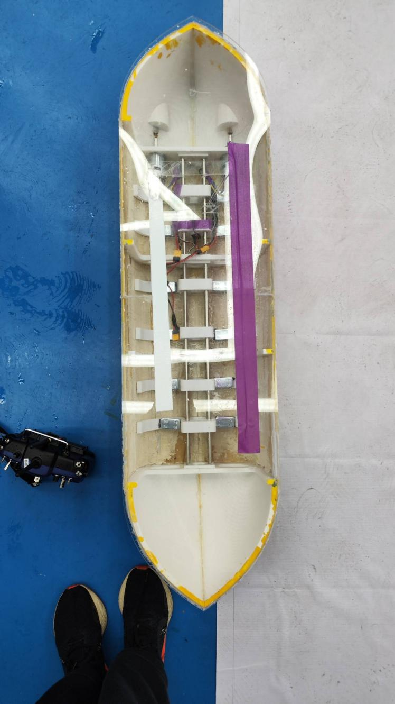

QEA 电动船——设计、仿真与制造
本项目要求团队设计并制造一艘电动货船，在满足承载能力的前提下 实现最大装载质量。项目综合运用 MATLAB 进行浮力/稳性分析，SolidWorks 进行三维建模， 经历三轮迭代原型制造，最终船体采用 3D 打印船首/船尾 + 轻木条船身的混合工艺， 775 有刷电机驱动，ExpressLRS 遥控链路。
1 设计需求与约束
- 船体总长度不超过 600 mm
- 须能承载尽可能多的载荷（评分标准：最大装载质量 / 自重比）
- 船体须能自主行驶（非拖曳），动力不限
- 须通过倾覆角测试（倾覆角 > 90° 视为优秀）
2 理论分析（MATLAB）
2.1 浮力与浮心
根据阿基米德原理，船体所受浮力等于其排开水的重力。在 MATLAB 中对船体截面进行 数值积分（梯形法则），计算不同吃水深度下的排水体积与浮力。 浮心（Center of Buoyancy, COB）为排水体积的体积质心。
2.2 重心与稳性
重心（Center of Mass, COM）由船体各部件（船壳、电机、电池、载荷）的质量与位置 加权平均计算。稳性分析的核心是复原力矩：当船体倾斜角 φ 时， 浮心位置随水线面变化而偏移，与重力构成复原力矩对。
其中 Δ 为排水量，GZ 为复原力臂。当 GZ 由正变负时的角度即为倾覆角。
2.3 倾覆角计算
MATLAB 仿真逐度（0°–180°）计算 GZ 曲线。最终设计的倾覆角为 125.1°， 远超 90° 阈值，表明船体具有良好的横向稳性。 关键设计策略：船底尽可能宽且平（增大水线面惯性矩），重心尽可能低（加压载物于底部）。


3 结构设计与制造
3.1 船型选择
在快艇型（低阻力、小排水量）与货船型（大排水量、高稳性）之间权衡， 最终选择宽体平底货船型，以最大化装载能力。 船长 550 mm，最大宽度 200 mm，船深 80 mm。
3.2 制造工艺
| 部件 | 工艺 | 材料 |
|---|---|---|
| 船首 / 船尾 | FDM 3D 打印 | PLA |
| 船身侧板 | 手工拼合 | 轻木条（Balsa） |
| 船底 | 平板裁切 | 轻木板 + 环氧树脂涂层 |
| 防水处理 | 4 层防水漆喷涂 | 聚氨酯防水漆 |
3.3 三轮迭代
- 第一版原型：船身曲率过大，3D 打印段与轻木段拼接困难，气密性不足。 →教训：简化曲面，增大平直段比例。
- 第二版原型：船首/船尾与轻木条船身的尺寸配合出现偏差（打印收缩率未补偿）， 需打磨才能嵌合。→教训：在 SolidWorks 中预留 0.3 mm 公差。
- 第三版（最终）：修正公差，4 层防水漆处理后密封性良好， 水测试无明显渗漏。承载测试满载 2.5 kg，倾覆角 125.1°。
4 动力与遥控系统
4.1 电机与螺旋桨
采用 775 有刷直流电机（12 V, ~18000 rpm 空载），经联轴器连接三叶螺旋桨。 电调（ESC）接受 PWM 信号控制转速。单电机后置推进，舵面转向。
4.2 ExpressLRS 遥控链路
遥控采用开源 ExpressLRS 协议（900 MHz 频段），延迟极低（< 5 ms）， 传输距离远超测试水池尺度需求。接收机输出 CRSF 协议信号至电调与舵机。
5 演示视频
6 项目成果
- MATLAB 完成浮力、浮心、重心、GZ 曲线与倾覆角（125.1°）的完整稳性计算
- SolidWorks 三维建模并导出 3D 打印船首/船尾
- 经三轮迭代完成混合工艺（3D 打印 + 轻木条 + 4 层防水漆）船体制造
- 775 电机 + ExpressLRS 遥控实现自主航行
- 最终装载质量 2.5 kg，倾覆角 125.1°